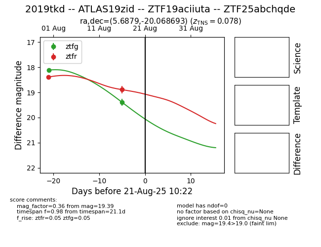

Target 2019tkd at 2025-08-21 11:20, see:
FINK: fink-portal.org/ZTF19aciiuta
Lasair: lasair-ztf.lsst.ac.uk/objects/ZTF19aciiuta
ALeRCE: alerce.online/object/ZTF19aciiuta
TNS: wis-tns.org/object/2019tkd
YSE: ziggy.ucolick.org/yse/transient_detail/2019tkd
alt names
ZTF19aciiuta (ztf)
ZTF25abchqde (alerce)
2019tkd (tns,yse)
ATLAS19zid (atlas)
coordinates:
equatorial (ra, dec) = (5.6879,-20.06869)
galactic (l, b) = (78.4859,-80.35991)
photometry
last ztfg=19.39, ztfr=18.89
2 ztfg, 2 ztfr detections
